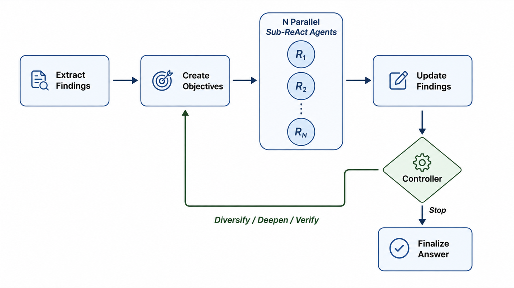
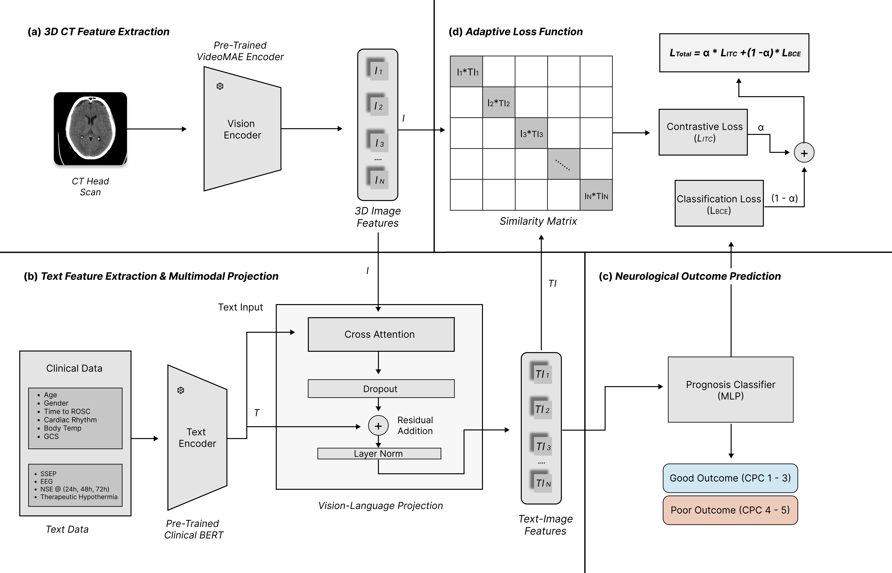
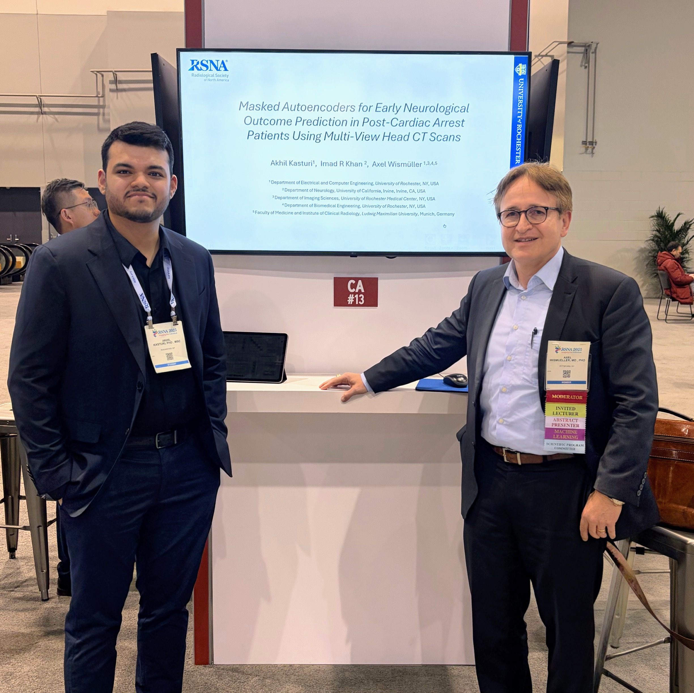
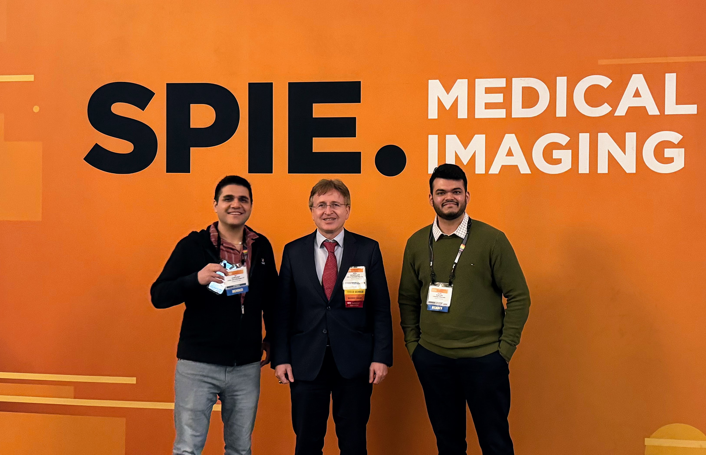
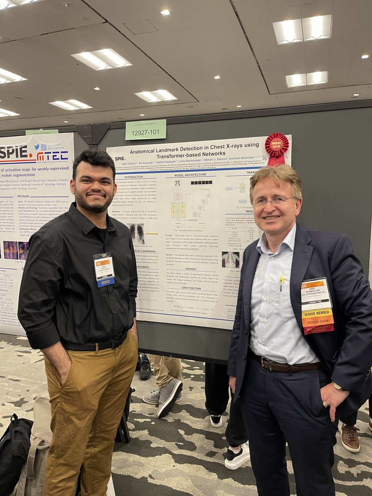

Poster presentations
SPIE Medical Imaging — Posters


PhD Candidate · University of Rochester
I am a PhD candidate in Electrical and Computer Engineering at the University of Rochester. I work on large language models and multimodal learning, mostly for clinical problems. In summer 2026 I was an Applied Science Intern at Amazon, working on methods that help language models gather the information they need from tools before answering.
Research Interests: Large Language Models, Multimodal Learning, Vision-Language Models, Tool-Using Language Models, Self-Supervised Learning
I am a PhD candidate at the University of Rochester, advised by Prof. Axel Wismüller. I develop machine learning methods that combine language, images, and clinical data.
My work includes pre-training and adapting language models, combining text with medical images and time-series measurements, and generating clinical reports from multiple sources of patient information. I work across model development, distributed training, and careful evaluation.
I have published 22 peer-reviewed papers, more than 10 as first author, and received the Best Scientific Poster Award at SPIE Medical Imaging. My work on multimodal outcome prediction was published in Nature Scientific Reports. In summer 2026 I completed an Applied Science internship at Amazon on tool-using language models.
PhD, AI for Multimodal Learning & Generative AI (Dept. of ECE)
University of Rochester (In Progress)
M.S., AI and Machine Learning (Dept. of ECE)
University of Rochester
M.Eng., Advanced Signal Processing (Dept. of ECE)
Western University
PyTorch · Hugging Face Transformers · DeepSpeed · TensorFlow · Python · C++ · AWS (EC2, S3) · Docker · CUDA · Multi-GPU Distributed Training (A100, H100)
akasturi@ur.rochester.edu
I worked on how language models use external tools to answer difficult, multi-step questions. The work covered reviewing prior methods, designing and implementing a new one, running benchmark experiments, and writing it up for publication.
My main project was Evidence-Guided Adaptive Search (EGAS). Instead of extending one line of reasoning, the method breaks a question into the specific facts needed to answer it, sends out separate searches to establish each one, and keeps only what the tool results actually support. A controller reads that record to decide what to investigate next, or to stop. I compared EGAS against six published methods on two public benchmarks, BFCL V4 Web Search and τ2-bench Retail. It is under review as a first-author submission at the NeurIPS 2026 Workshop track (under review).
I also implemented and compared self-correction and tree-search methods for tool-using language models, and designed the evaluation used to rank their answers. That was an internal project, so no internal systems, data, or results are described here.

Our multimodal contrastive framework for early neurological outcome prediction after cardiac arrest is out in Scientific Reports, reaching an AUC-ROC of 0.94 across 208 patients.
Developed and evaluated Evidence-Guided Adaptive Search, a method for tool-using language models, and prepared a first-author workshop submission.
Presented poster on fine-tuned LLaMA-based large language models trained on structured tabular variables for rapid, actionable risk stratification from patient records.
Delivered oral presentation on a causal feature ablation methodology to quantify how individual input variables influence fine-tuned LLM predictions across structured and unstructured text data.
Presented research on multimodal fusion methods combining LLM-encoded text, 3D Vision Transformers, and time-series signal representations at the Radiological Society of North America Annual Meeting in Chicago.
Partnering with Yale University and UC Irvine under NIH funding to build one of the largest multimodal datasets in the domain—integrating imaging, time-series signals, and 4 billion+ text records across 3 independent sites.
CLAIR (contrastive language and image reasoning with masked autoencoders) combines head CT imaging with non-imaging clinical information through a cross-attention mechanism and a contrastive learning approach, to predict cerebral performance category score after cardiac arrest.
In a retrospective study of 208 patients, CLAIR reached an AUC-ROC of 0.94 (CI 0.90–0.97) when trained on multiplanar CT reconstructions combined with clinical data, against 0.80 (CI 0.74–0.86) for imaging-only methods (p = 0.03). In a structured evaluation, ICU neurologists made fewer prognostic errors with CLAIR-assisted assessment than without. The approach also applies to CT scans taken within the first 24 hours post-arrest.

Pre-trained and domain-adapted LLaMA 3.2 (3B) and LLaMA 3 (8B) on a 4 billion+ record text corpus and 200K+ scientific articles using self-supervised masked language modeling. Distributed across 4× A100 GPUs on AWS with DeepSpeed ZeRO-3 and bf16 mixed precision. Benchmarked on EMR-QA and ClinicalQA.
LLaMA 3 / 3.2 · AWS · DeepSpeed · PyTorchBuilt a novel multimodal reasoning model fusing LLM text embeddings, graph-based time-series encoders, and 3D Vision Transformer video representations via cross-modal attention. Achieved 97% AUC with cross-site generalization on 2,330 samples from 3 independent institutions.
PyTorch · 3D-ViT · GNN · Contrastive LearningDesigned a multi-agent orchestration system using Gemini-based LLM agents for end-to-end automated report generation. Implemented agent communication protocols, tool-use integration, and RAG with domain knowledge bases. Evaluated via BERTScore, ROUGE, and human-expert review.
Gemini · Retrieval-Augmented Generation · BERTScore · DockerDeveloped a causal feature ablation methodology to quantify how individual input variables influence fine-tuned LLM predictions, systematically isolating each feature's contribution across structured tabular and unstructured text data for interpretable, trustworthy AI.
SPIE 2026 Oral · Explainable AIApplied DINO self-distillation to pre-train Vision Transformers on unlabeled image datasets, reducing labeled data needs by 80–90%. Fine-tuned SAM for instance segmentation with DINO-initialized weights. Shared backbone for detection and segmentation tasks.
DINO · SAM · ViT · PyTorchBuilt BioVLM-T, a generative vision-language foundation model incorporating temporal prior images and patient history for automated report generation. Trained on a large-scale dataset using PyTorch and Hugging Face Transformers.
SPIE Medical Imaging 2025Developed transformer-based methods for precise keypoint localization in images using heatmap regression heads. Leveraged DINO self-supervised pre-trained features for weight initialization. Won Best Scientific Poster Award at SPIE Medical Imaging 2024.
Best Scientific Poster · SPIE 2024


Multimodal contrastive prognostication framework for early neurological outcome prediction in post-cardiac arrest patients
Scientific Reports (Nature), 2026 · 16:15582
Evidence Guided Adaptive Search for Helping AI Agents Find Missing Facts Before Answering
Under review — NeurIPS 2026 Workshop
Masked autoencoders for early neurological outcome prediction in post-cardiac arrest patients using brain CT scan
Emerging Topics in Artificial Intelligence (ETAI) 2025
BioVLM-T: A temporal framework for radiology report generation using pre-trained vision language foundational models
SPIE Medical Imaging: Clinical and Biomedical Imaging 2025
ETT-LDx: Transformer-based landmark detection system for endotracheal tube placement verification in chest radiographs
SPIE Medical Imaging: Computer-Aided Diagnosis 2025
Inferring causal relations from multivariate data using Large-Scale Augmented Granger Causality (lsAGC)
NeuroImage (Elsevier), 2025
Uncertainty quantification and out-of-distribution detection in skin and breast lesion diagnostics using conformal prediction
Emerging Topics in Artificial Intelligence (ETAI) 2025
Large-scale nonlinear Granger causality (lsNGC) analysis of functional MRI data for schizophrenia classification
SPIE Medical Imaging: Computer-Aided Diagnosis 2025
Analysis of brain connectivity in autism spectrum disorder using large-scale non-linear Granger causality (lsNGC)
SPIE Medical Imaging: Clinical and Biomedical Imaging 2025
Large-scale augmented Granger causality (lsAGC) for enhanced analysis of brain connectivity in autism spectrum disorder
SPIE Medical Imaging: Clinical and Biomedical Imaging 2025
Functional connectivity-based classification of autism spectrum disorder using mutual connectivity analysis with local models
Emerging Topics in Artificial Intelligence (ETAI) 2024
Anatomical landmark detection in chest x-ray images using transformer-based networks
SPIE Medical Imaging: Computer-Aided Diagnosis 2024
Classification of endotracheal tube position in chest x-rays images
SPIE Medical Imaging: Clinical and Biomedical Imaging 2024
Segmentation of catheter tubes and lines in chest x-rays using deep learning models
SPIE Medical Imaging: Clinical and Biomedical Imaging 2024
Leveraging a memory-driven transformer for efficient radiology report generation from chest x-rays to establish a quantitative metric
Emerging Topics in Artificial Intelligence (ETAI) 2024
Enhancing graph attention neural network performance for marijuana consumption classification through lsAGC analysis of functional MR images
SPIE Medical Imaging: Clinical and Biomedical Imaging 2024
Graph attention transformers and large-scale Granger causality to classify marijuana consumption from functional MR images
SPIE Medical Imaging: Clinical and Biomedical Imaging 2024
Detecting landmarks in anatomical medical images using transformer-based networks
Emerging Topics in Artificial Intelligence (ETAI) 2023
Leveraging large-scale Granger causality and neural networks to measure the level of consciousness in DOC patients
Emerging Topics in Artificial Intelligence (ETAI) 2023
Identification of schizophrenia patients using large-scale extended Granger causality (lsXGC) in functional MR imaging
SPIE Medical Imaging 2023
Large-scale Granger causality (lsGC) for classification of schizophrenia using functional MRI
SPIE Medical Imaging 2023
Large-scale augmented Granger causality (lsAGC) for discovery of causal brain connectivity networks in schizophrenia patients using functional MRI neuroimaging
SPIE Medical Imaging 2023
Classification of schizophrenia using large-scale kernelized Granger causality (lsKGC) and functional MR imaging
SPIE Medical Imaging: Computer-Aided Diagnosis 2023
Tracking the impact of global iodinated contrast agent shortage on radiology: analysis of CT exam volumes at a major US healthcare system
SPIE Medical Imaging 2023